The K-WASUB manual
A modern bass synth for the M-VAVE FM-1: DnB, dub, dubstep, techno. Live wobble, two oscillators with two different engines, a sub, effects, an EQ, a morph between four sounds. Everything is played with the 27 keys, the four knobs K1–K4 and the FM-1's buttons.

Key features
- Two versions: A with 4 efficient engines for modern basses, B with 8 engines for deeper sound design (pads, synth and FX).
- LFO learn: hold LFO and turn any knob, LFO 2 is assigned to that setting in one gesture (LFO 1 if you prefer, in the options).
- CLASSIC or SHIFT (OCT− / OCT+) mode for a faster workflow, chosen in the options.
- SEL windows: PERFORM, MORPH, FX LIVE, MACROS.
- A/B morph: blend two sounds live.
- A live LFO page to reshape your wobble basses while you play.
- SEQ BASS, ARP, MIDI.
- The sound: engines, filters, effects, master, and FX PADS.
- Animated oscillator visuals, live.
- A visual EQ.
- Totally different themes, to fit the way you work.
- Brightness, contrast, fonts and size.
And a lot more is coming. Don't hesitate to give your opinion and tell me which addition would be the most useful. A donation, even a small one, would help me enormously.
Contents
- ★ The 6 themes at a glance
- 1 · Start in 3 minutes
- 2 · The FM-1 panel
- 3 · The 8 pages and their views
- 4 · Long presses
- 5 · CLASSIC and SHIFT
- 6 · PERFORM, MORPH, FX LIVE, MACROS (SEL)
- 7 · FX PADS
- 8 · Themes, palettes, brightness, contrast
- 9 · The sound: engines, filters, effects, master
- 10 · SEQ BASS, ARP, MIDI
- 11 · Stability and troubleshooting
- 12 · Versions A and B
The 6 themes at a glance
SYSTEM › THEME changes the whole layout; PALETTE changes the colours (19 palettes, see below). Here is the same screen, the oscillator page, in each theme.
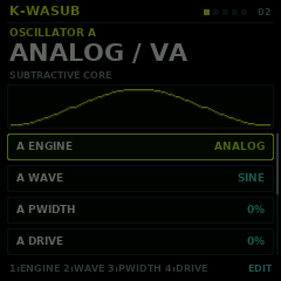
Lists, one row per setting, the first four on K1–K4. The reference layout.
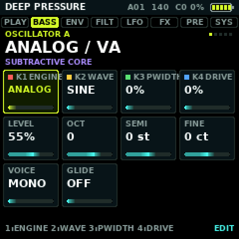
A status bar, the eight pages always in view, compact cells.
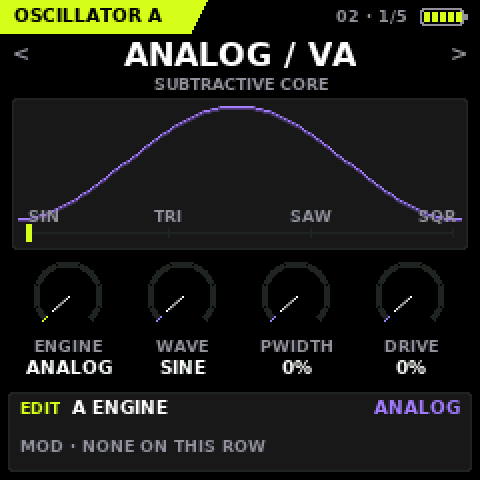
A tabbed header, a big wave and four knob dials: readable at arm's length, made for the stage.
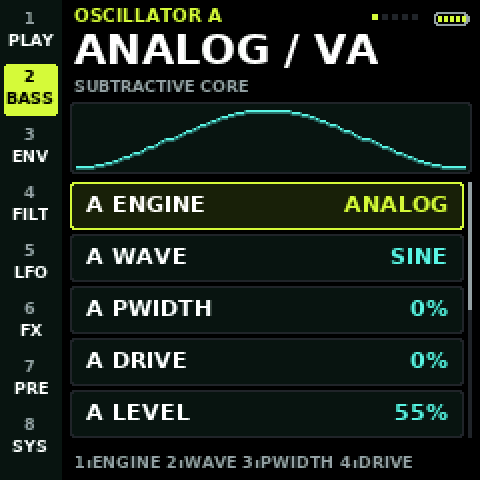
A rack-unit look: a side rail of pages, tight rows.
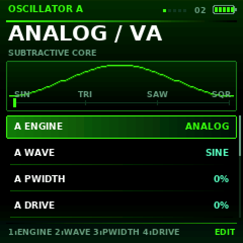
The classic layout lit by gradients, fluo green.
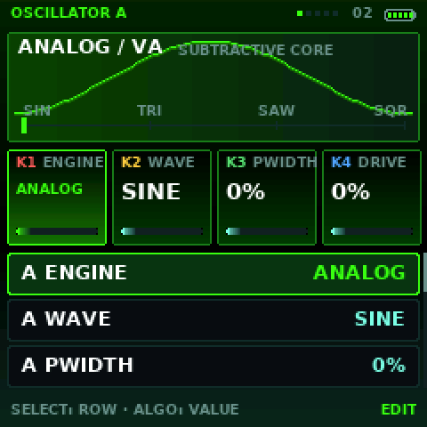
The picture fills almost the whole page, four tiles, gradients in different directions.
1 · Start in 3 minutes
- Install: open installer.html in Chrome or Edge, plug the FM-1 in with a USB data cable, click “Install K-WASUB”. Without a compatible browser:
INSTALL-Linux.sh,INSTALL-Mac.commandorINSTALL-Windows.bat(Python 3). To go back to KAWA or to the stock firmware: see the README. - First start: K-WASUB asks you once how you want to play: CLASSIC (lists) or SHIFT (3 columns). After that, the start screen shows the FM-1 seen from the front; press any button.
- Play: the 27 keys play the bass. K1–K4 set the four settings shown. Turn PRESETS to change sound, on HOME or on the presets page (ARP): the change is immediate, with no confirmation (hold SAVE = UNDO if you regret it).
- Try: hold LFO and turn a knob to put LFO 2 on what that knob sets (or LFO 1:
SYSTEM › LFO HELD = LFO). Hold FX: the keys become effects (FX PADS).

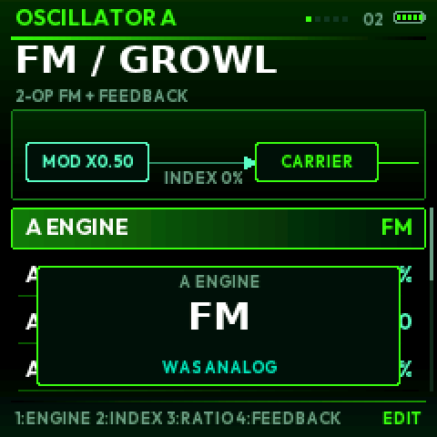
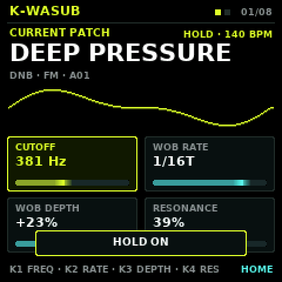
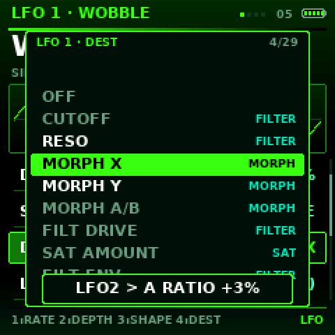
2 · The FM-1 panel
| Button | Page | Content |
|---|---|---|
| HOME | PLAY | The current sound (wave, 4 settings) · LIVE MIX |
| EDIT | BASS | Oscillators A, B, sub + noise, A + B combination, OSC C (sample, resample) |
| ENV | ENV | Amp, filter and mod envelopes |
| SEQ | FILT | Filter, filter modulation, SEQ BASS |
| LFO | LFO | LFO 1 (wobble), LFO 2, STEP FX, matrix |
| FX | FX | Saturation, multiband (OTT), compressor, EQ, delay, reverb, chorus, phaser, crush, master |
| ARP | PRE | Presets A (factory) and B (your sounds), SAVE, arpeggiator |
| GLO | SYS | Settings (theme, palette, brightness, contrast, bass, auto level, MIDI…) |
| SEL | — | Windows: PERFORM → MORPH X/Y → FX LIVE → MACROS → MORPH A/B |
| SAVE PLAY REC | — | Save a patch · start the SEQ · tap tempo |
| OCT− OCT+ | — | Octave (short press) · UNDO / REDO (long press) · SHIFT (held + knob) |
A page button always opens the first view of its page (the most important one); pressing it again steps through the others, from the most useful to the least useful. At the bottom of every screen: what K1–K4 do on that view. SELECT chooses a row, ALGO changes its value, K1–K4 set the first four rows (the most useful ones always come first).
3 · The 8 pages and their views
EDIT · the oscillators

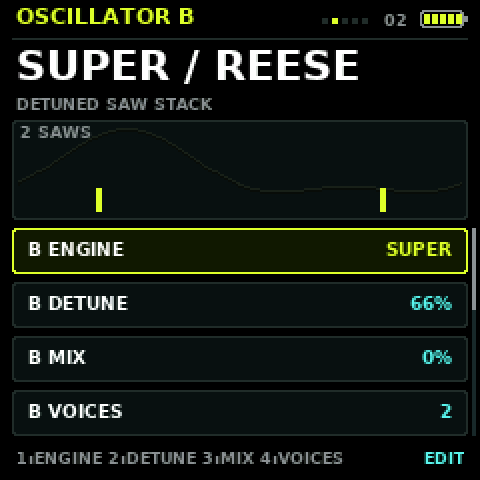
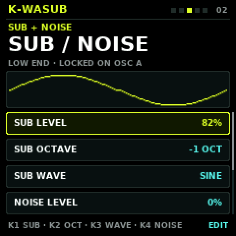
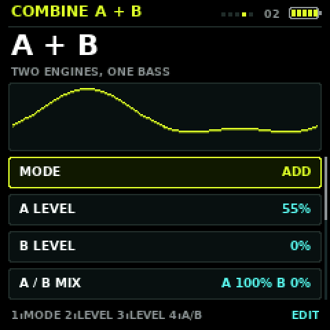
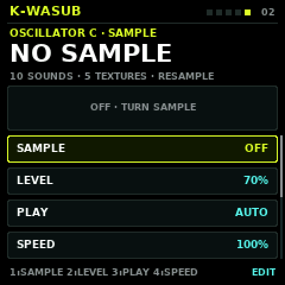
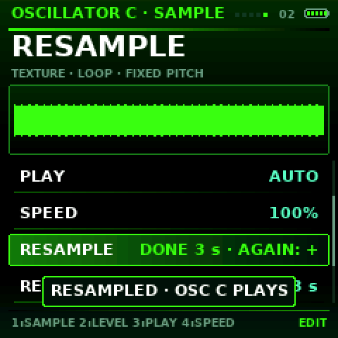
REC LENGTH (2, 3 or 4 s), then turn RESAMPLE towards +: the output (effects included) is recorded. When it ends, OSC C plays the recording (sample 16, RESAMPLE): looped or once (PLAY), slowed down (SPEED), transposed from the keys (PITCH › KEYS). Then change the base sound and go again: layer after layer. The recording is in RAM (11 kHz): it is lost at power-off.ENV and FILTER
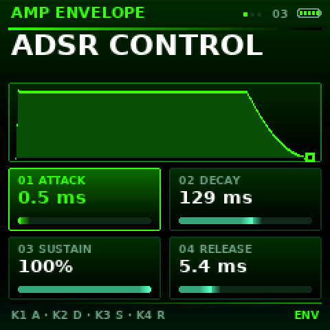
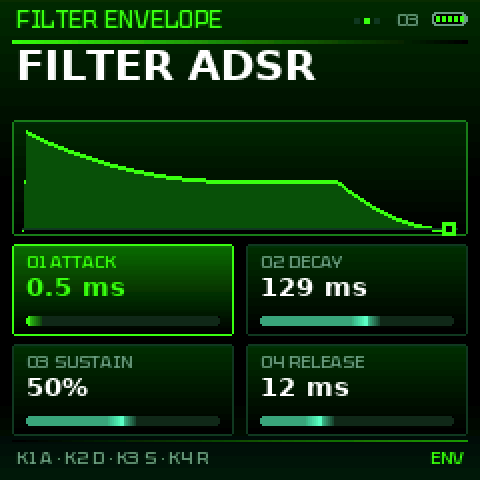
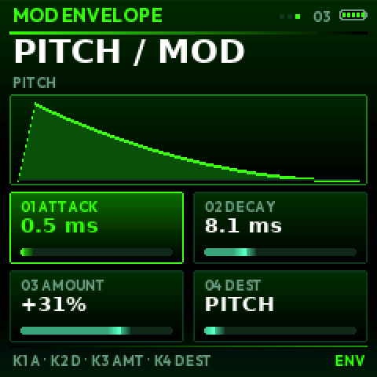

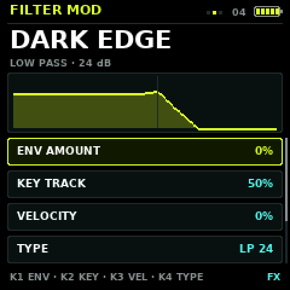
LFO · the wobble

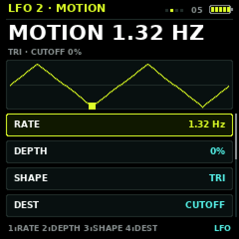
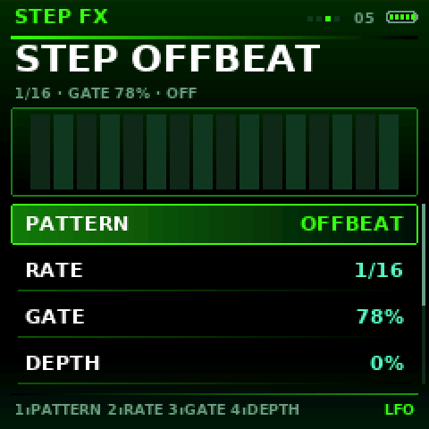
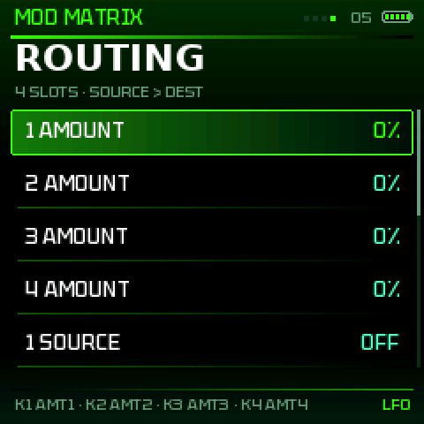
Almost anything can be a destination: filter, pitch, oscillator shapes, the mixes and settings of every effect, MORPH X / Y / A-B. SYSTEM › GRID limits the speeds to round divisions for live playing.
FX · the effects
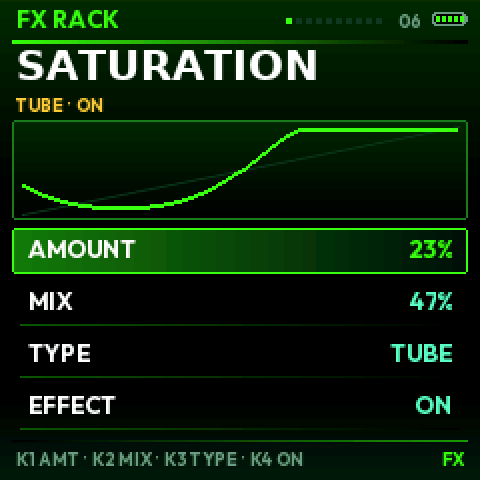
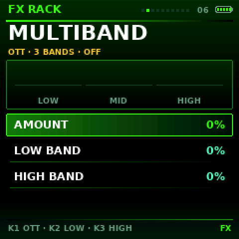
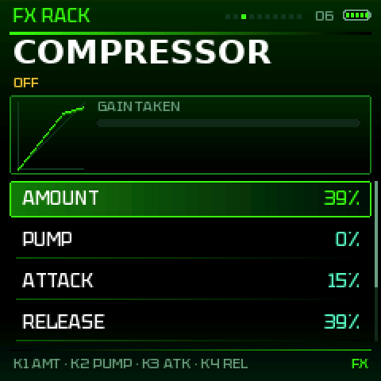

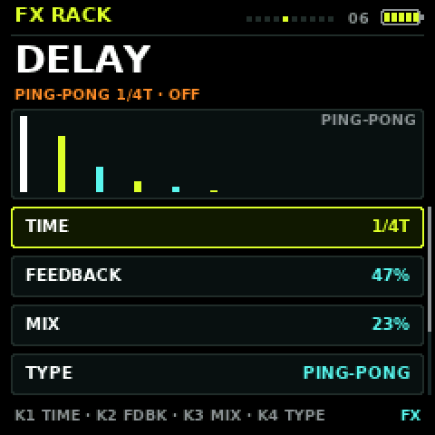
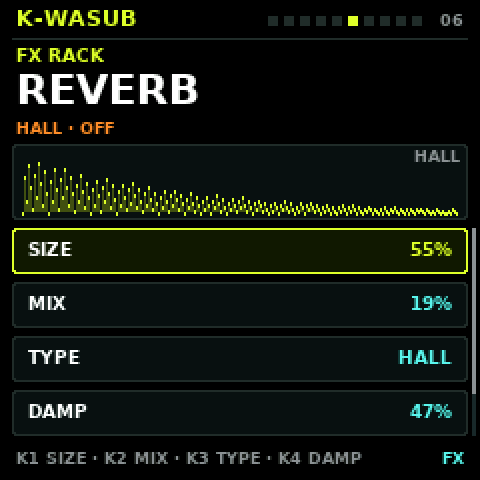
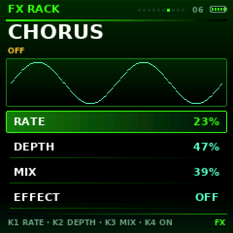
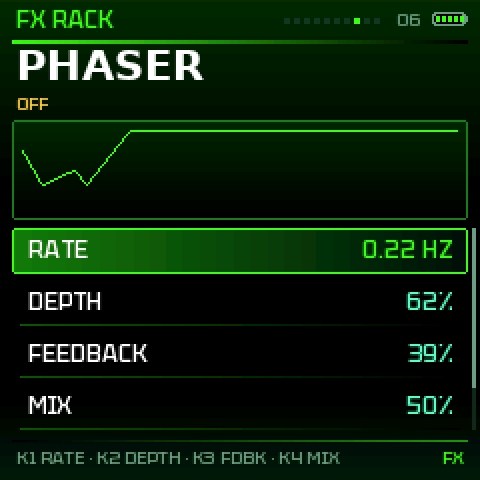
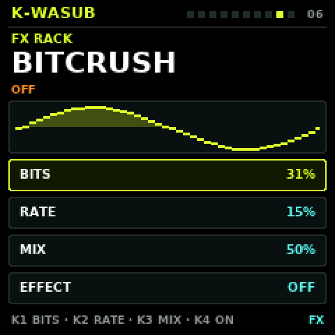
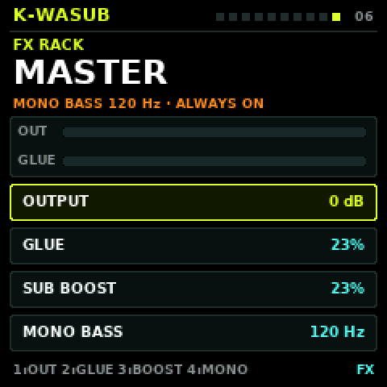
PRESETS, SYSTEM

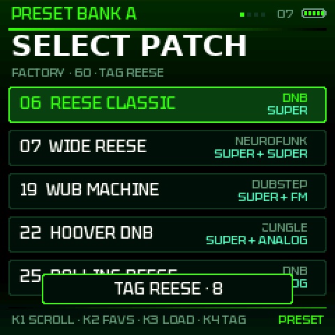
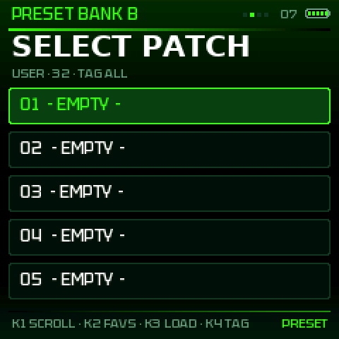
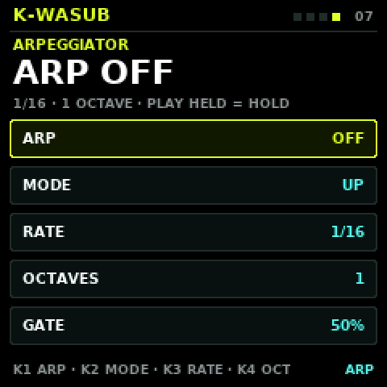
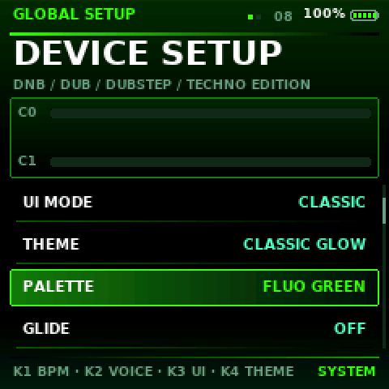
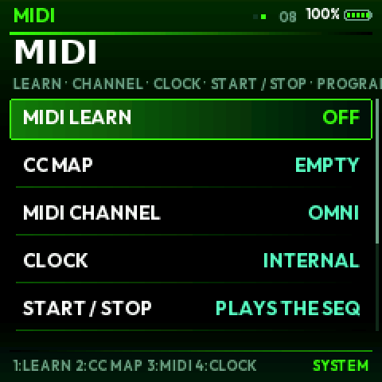
4 · Long presses
When you hold a button, a bar fills at the bottom of the screen, with what will happen written above it. You can let go before the end to cancel.
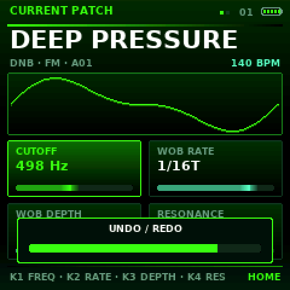
| Hold | Effect |
|---|---|
| OCT− 1 s | UNDO (without turning a knob; with a knob it is SHIFT) |
| OCT+ 1 s | REDO |
| SAVE | UNDO / REDO window (OCT− undoes, OCT+ redoes, 16 steps) · on PRESETS: favourite |
| FX | FX PADS: the keys play effects |
| HOME | PANIC: all notes and live effects stop |
| GLO | Switches CLASSIC ↔ SHIFT |
| SEL | A/B COMPARE: you hear the saved sound for as long as you hold |
| PLAY | HOLD: the keys stay on |
| LFO / ENV + knob | Quick assign: LFO 2 (or LFO 1, chosen in SYSTEM › LFO HELD = LFO; ENV: the mod envelope) on what that knob sets; the turn sets the amount |
| EDIT SEQ ARP 1.2 s | Controlled random of the page (about a quarter of the range; SAVE held undoes it) |
5 · CLASSIC and SHIFT
Two ways to play (SYSTEM › UI MODE, or hold GLO). K-WASUB no longer asks at every start (SYSTEM › ASK brings the question back).
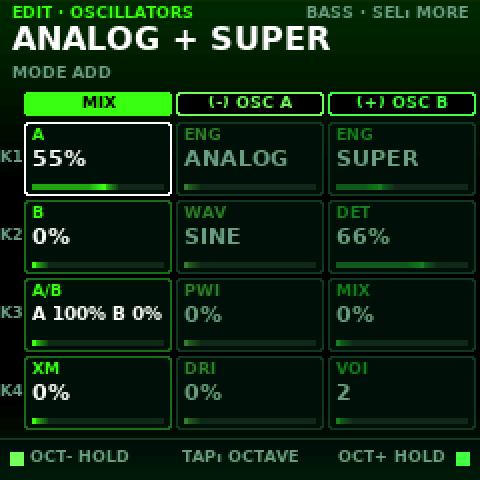
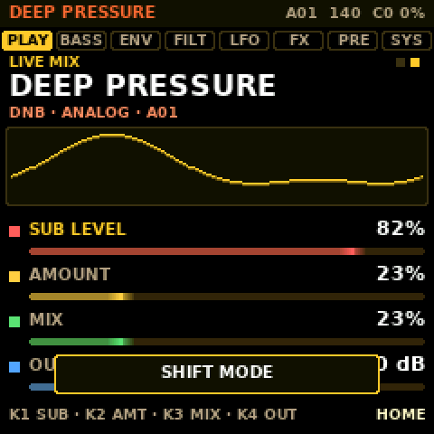

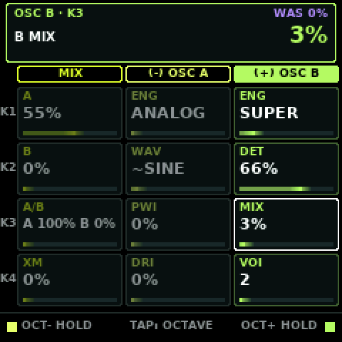
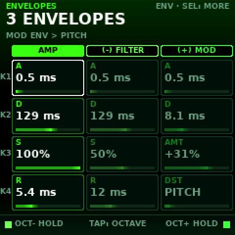
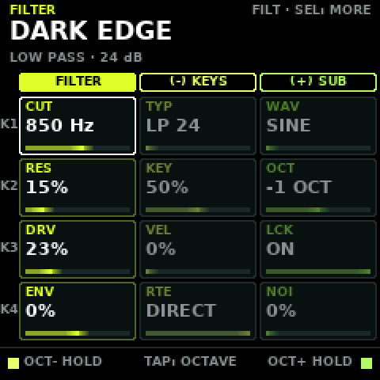
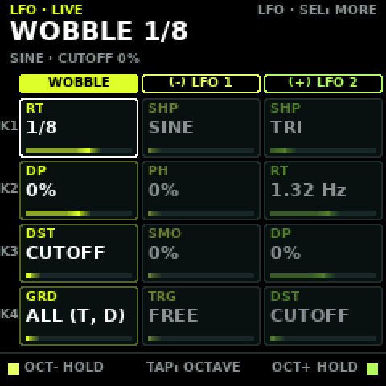
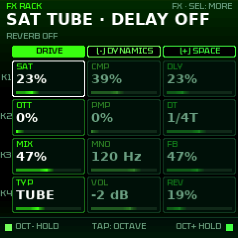
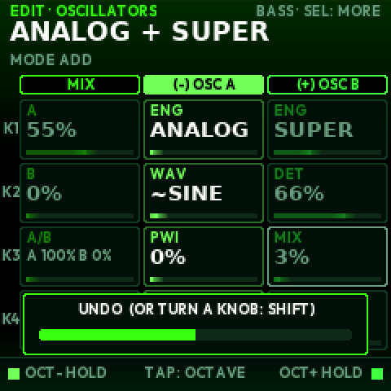
6 · PERFORM: all the live playing on one screen

The first SEL window. Nothing to scroll: K1–K4 are the 4 macros, named after what they move (set in MACROS); SELECT and ALGO walk the dot of the MORPH X/Y; the wobble's speed and depth are on top. The keys play the bass; OCT+ held turns them into pads (the same as FX PADS) for as long as you hold it.
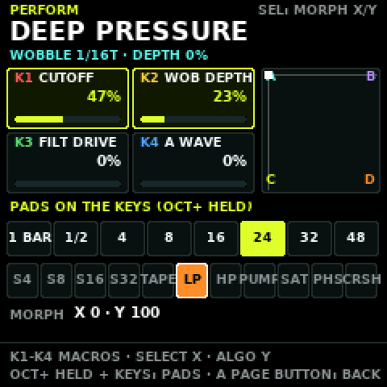
The SEL windows
SEL opens them one after the other, from the most played to the least played: PERFORM → MORPH X/Y → FX LIVE → MACROS → MORPH A/B → back. A page button closes the window.
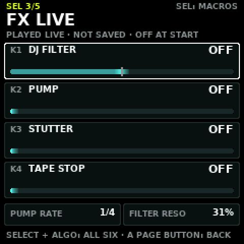
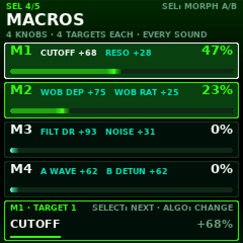

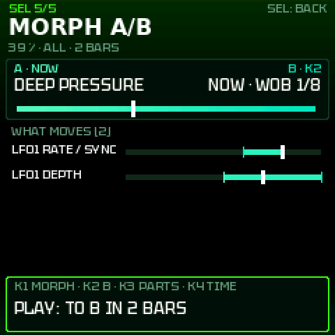
7 · FX PADS: the keys play effects
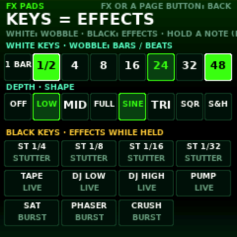
Hold FX: the 27 keys no longer play notes but effects. Keep a note going with PLAY held (HOLD) or start the SEQ, then play with the effects. FX or a page button closes the window.
| Keys | Effect |
|---|---|
| White 1 to 8 | Wobble speed: 1 BAR 1/2 then 4 8 16 24 32 48 per bar (1/4, 1/8, 1/16, 1/16 triplet, 1/32, 1/32 triplet) |
| White 9 to 12 | Wobble depth: OFF, LOW, MID, FULL |
| White 13 to 16 | Wobble shape: SINE, TRI, SQR, S&H |
| Black 1 to 4 | STUTTER 1/4, 1/8, 1/16, 1/32 (for as long as the key is held) |
| Black 5 to 7 | TAPE STOP · DJ FILTER LOW · DJ FILTER HIGH |
| Black 8 to 11 | PUMP · SATURATE · PHASER · BIT CRUSH (bursts) |
8 · Themes, palettes, brightness, contrast
The default look is STUDIO with the GOLD palette. SYSTEM › THEME changes the layout (CLASSIC, STUDIO, PURE, RACK, CLASSIC GLOW, TECH); PALETTE the colours (2 of each theme's own, plus SYNTHWAVE, MINT, BLACK / WHITE, INVERTED, RED, ICE, FLUO, PINK, GOLD, which work with every theme). CONTRAST (HIGH by default) makes the background truly black and the text truly white; MAX adds a darker gamma curve on the screen. FONT: 4 typefaces; LOUPE: the biggest size that fits.
TECH: the picture on almost the whole page
The TECH theme changes the layout completely: the oscillator, envelope, filter, LFO or effect fills almost the whole screen, under a thin bar; four tiles below are K1 to K4; one line shows the row chosen with SELECT / ALGO. The background is a gradient (top to bottom) and every window has its own, running another way: the picture left to right, the tiles bottom to top, the line right to left. Its own palettes: VOLT (fluo green) and CYBER (cyan, magenta).
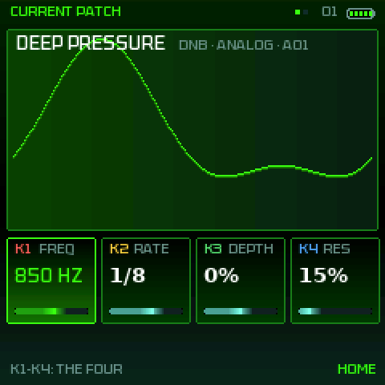


CLASSIC GLOW: the simple layout, in gradients, fluo green
The CLASSIC GLOW theme (formerly GLOW) keeps the simplest layout and puts the colour in light: the accent glows down from the top of the screen, the chosen row lights up from the left, boxes and pictures are lit from above. Its own palettes are FLUO GREEN and TOXIC (yellow-green); every other palette works too.


Brightness
SYSTEM › BRIGHTNESS: ECO, NORMAL, BRIGHT and MAX. The FM-1's backlight is a plain switch (fully on, no steps): the low steps darken the colours, and the screen is also sent its brightness command (WRDISBV). MAX is the most the FM-1 can give: backlight full, screen at 255, pure white text, and every accent colour pushed to full intensity (same hue). It is the default.
All the palettes


9 · The sound
Engines, filters, modulation
The master: more bass, no volume surprises
MULTIBAND (OTT) (FX page, per sound): three bands (under 120 Hz, 120 Hz–2.5 kHz, above) each brought toward its own level: weak parts go up, loud parts go down.
AMOUNT doses the effect, LOW BAND and HIGH BAND set the low and the high.MONO BASS (MASTER, per sound, 120 Hz by default): under the chosen frequency, left and right get the same thing: a tight sub, even with chorus, delay or reverb.
SUB LOCK (SUB + NOISE, per sound, ON by default): the sub is oscillator A one or two octaves lower, in phase with it (its pitch, its drift, its fine): no cancelling, a solid low end.
DEEP BASS (OFF / DEEP / MAX): a shelf adding about +4 dB (MAX +7 dB) under 90 Hz, for more present and deeper bass.
Limiter (always on): nothing goes above the ceiling, even with the volume at full; the gain drops at once and comes back in ~50 ms.
AUTO LEVEL (ON by default): a slow normaliser that brings every sound toward the same average level (up in a few seconds, down in under a second, still in silence). The MASTER volume stays your final setting.
The effects
Saturation (4 types), compressor with PUMP, bitcrush, chorus, phaser, delay (4 types, locked to the tempo), reverb (4 types), glue, sub boost, 4-band EQ (LSHF, BELL, NOTCH, HSHF, high / low cut: K1–K4 the frequency, OCT− held the gain, OCT+ held the type, ALGO the width).
10 · SEQ BASS, ARP, MIDI
11 · Stability and troubleshooting
LAST STOP, also in SYSTEM): WATCHDOG (TOO BUSY) processor overloaded · LOW VOLTAGE / 1.2V LOW weak power (battery, cable, USB port) · CRASH + address: a program error (write it down and send it).Two cores: the voices run on core 1 and the effects on core 0. If core 1 cannot keep up, everything goes back to one core (AUDIO CORES in SYSTEM). A governor thins the sound out (reverb, voices) instead of crackling, and the effects' time is measured every block so the audio never blocks the rest. No sound? Check AUDIO CORES (try SINGLE), the MASTER volume and the SYSTEM page (CPU LOAD).
USB rescue: holding OCT− at power-on opens the rescue mode: the installer always works.
12 · Versions A and B
A: 4 efficient engines for modern basses (ANALOG, REESE, WAVE, FM), a simpler interface. B (install/version-b/): 8 engines (adds PHASE DIST, WAVEFOLDER, HARD SYNC, VOCAL), for deeper sound design (pads, synth and FX). Both have the same pages, themes and modes.